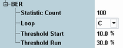

The following parameters configure the BER settings of the GSM multi-evaluation measurement. They are contained in section measurement control.

Defines the number of measurement intervals per measurement cycle (statistics cycle, single-shot measurement). This value is also relevant for continuous measurements, because the averaging procedures depend on the statistic count.
The measurement interval for the BER measurement equals one GSM burst.
Remote command:Configures the BER measurement (see "GSM RX Tests") for one of the following loops:
- C: The R&S CMW assumes that a BER test on GMSK-modulated signals is performed, i.e. that loop C is closed at the mobile under test and the ARB generator uses the LoopC_1040.wv file.
- SRB: The R&S CMW assumes that a BER test on 8PSK-modulated signals is performed, i.e. that an SRB loop is closed at the mobile under test and the ARB generator uses the SRB_8PSK_1040.wv file.
Defines a maximum bit error rate for the first evaluated burst. The purpose of this parameter is to avoid misleading BER results due to non-TCH bursts (e.g. SACCH bursts). The BER measurement starts with the first triggered burst providing a BER below the "Threshold Start" value, which is likely to be a TCH burst.
To improve the accuracy of the BER measurement, you can set the threshold start to a value that is close to the expected BER.
Remote command:Defines a maximum bit error rate for the evaluated bursts following the first burst. The purpose of this parameter is to avoid misleading BER results due to non-TCH bursts (e.g. SACCH bursts). The BER measurement is based on bursts with a bit error rate below the "Threshold Run" value only, which are likely to be TCH bursts.
For varying test conditions, the threshold has to be well above the expected BER. It also has to be well below the expected BER of non-TCH bursts (50 %). Note that the BER measurement does not display BER results above 30 %; see "GSM RX Tests".
Remote command: